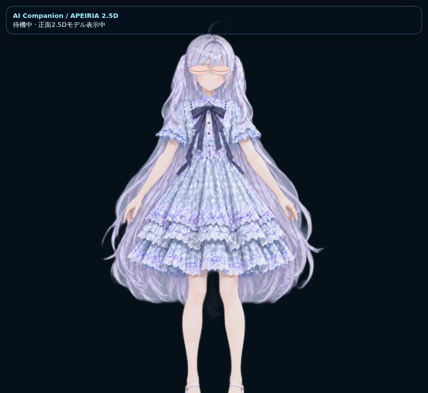
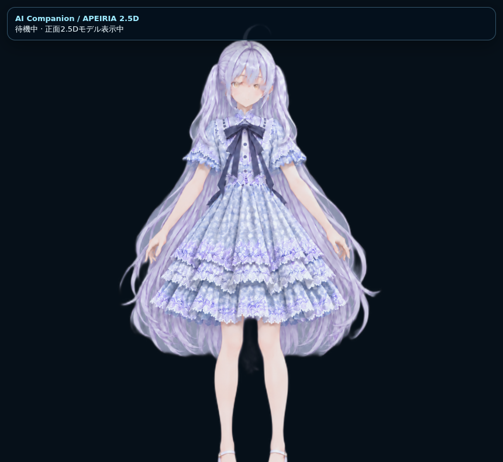
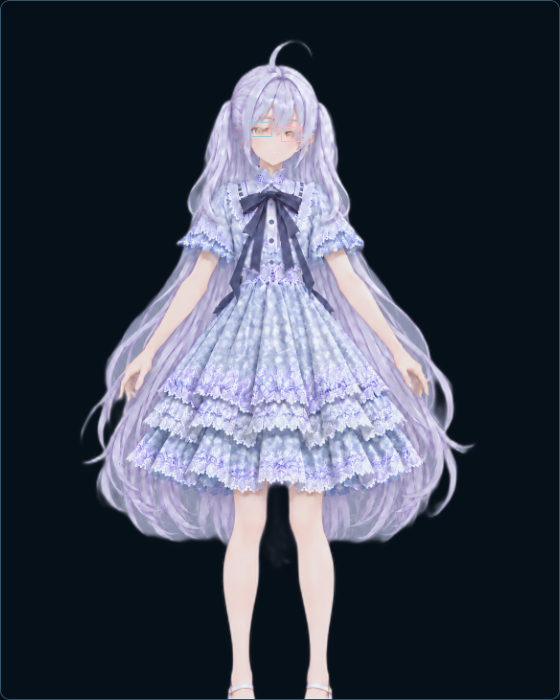
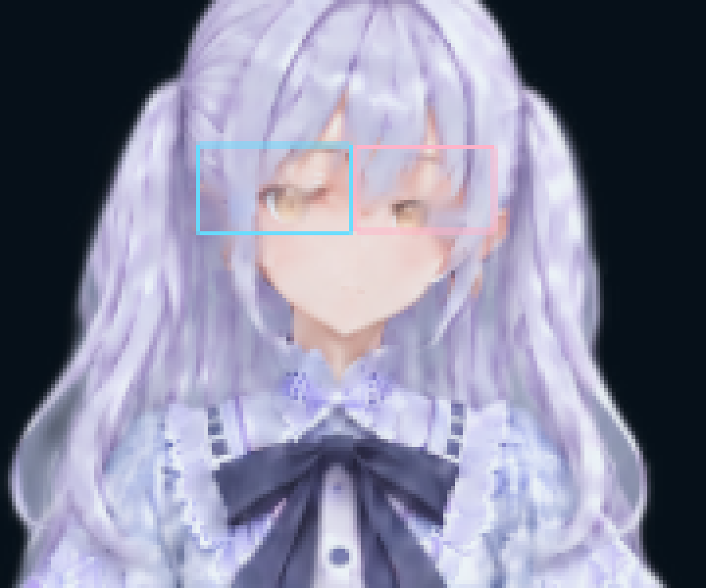
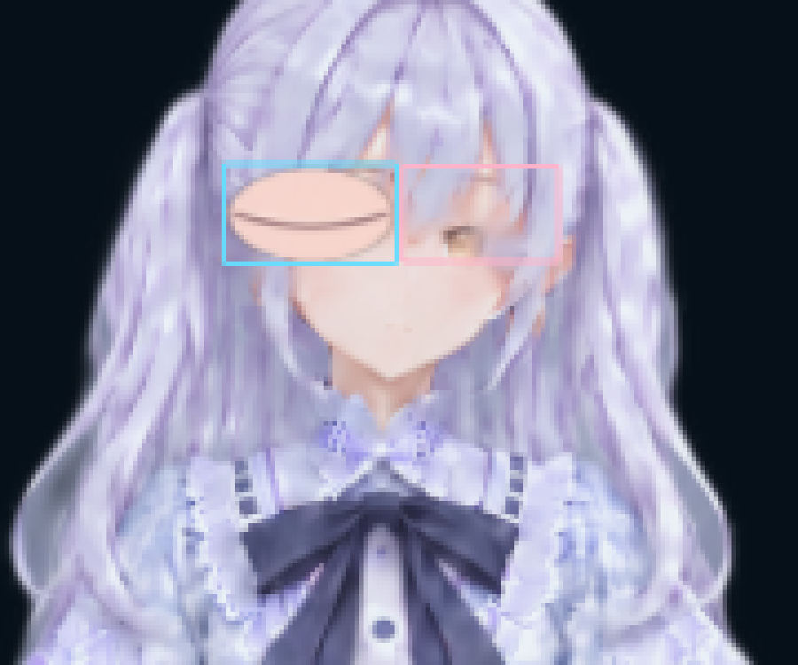
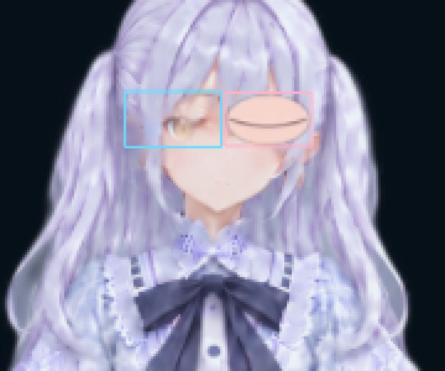
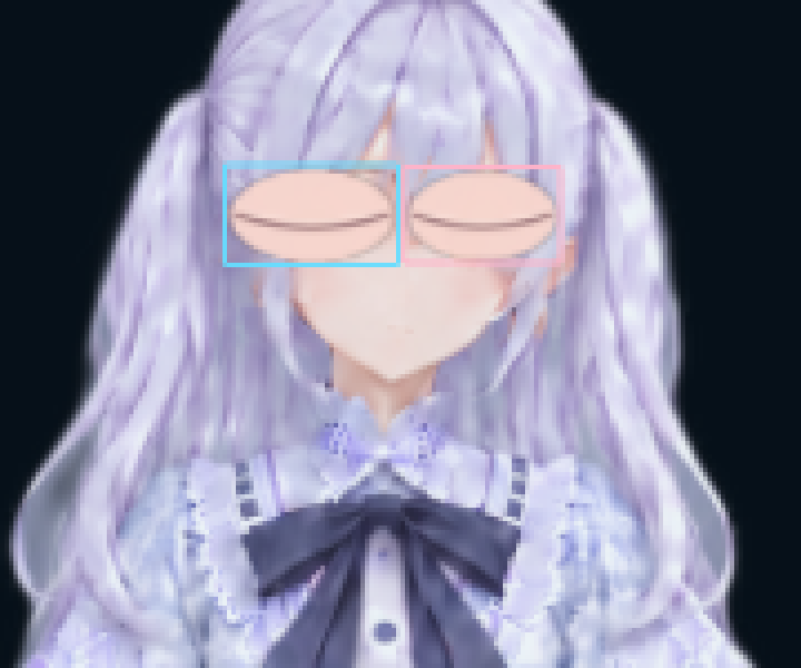
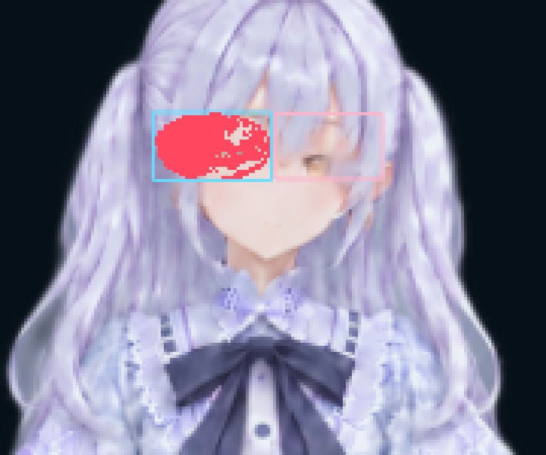
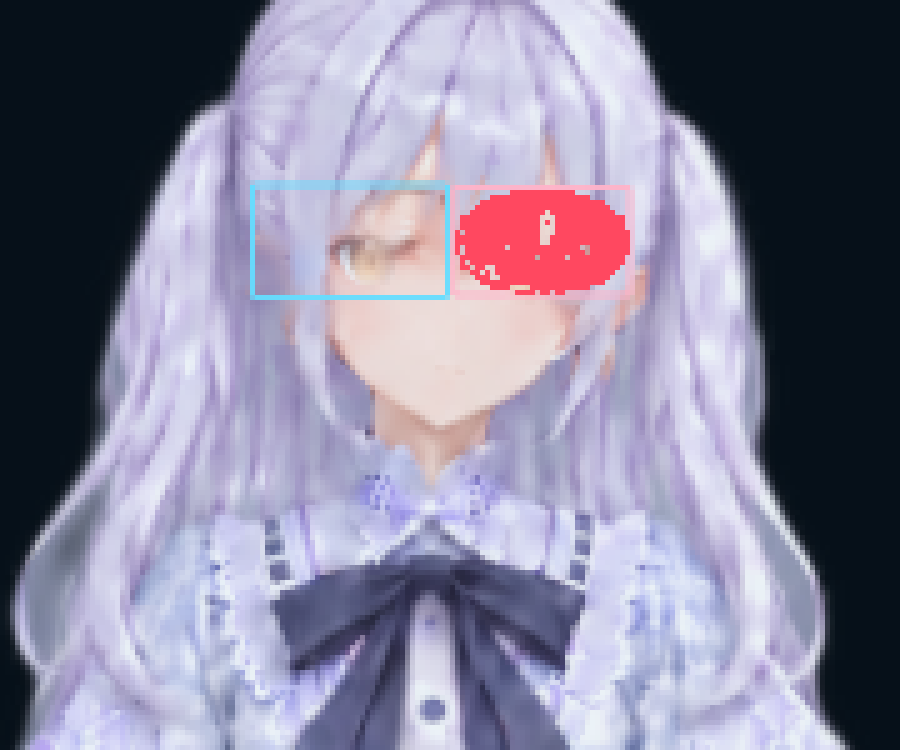
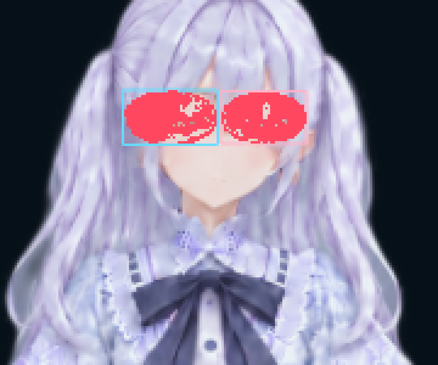

APEIRIA WebGL render report
Chromium + SwiftShaderで実際のGLBをWebGL描画した結果です。
commit: 033db348e73c2a55c2efb534c7bfa3d81591e131
生成日時: 2026-10-06T03:34:33.675Z
renderer: WebKit WebGL
実アプリ

通常
両目閉じ片目ごとの検証（枠付き）

通常左目閉じ右目閉じ両目閉じ顔アップ（同一倍率）
同じ画素範囲を5倍に拡大しています。

通常
左目閉じ
右目閉じ
両目閉じ差分マップ
通常状態から変化した画素を赤で表示しています。

左目閉じ
右目閉じ
両目閉じ差分解析JSON
自動瞬き
診断JSON · 検証ページ
診断
{
"commit": "033db348e73c2a55c2efb534c7bfa3d81591e131",
"generatedAt": "2026-10-06T03:34:33.675Z",
"webgl": {
"canvas": true,
"webgl": true,
"renderer": "WebKit WebGL",
"status": "WebGL表示準備完了。範囲枠を見ながら各状態を確認してください。"
},
"pageErrors": [],
"appDiagnostics": {
"textureReady": true,
"textureTargets": 2,
"progress": 0,
"autoCount": 1,
"lastBlinkAt": 2050.7999999999956,
"coordinateSystem": "model-local",
"config": {
"l": {
"x": -0.067,
"y": 0.733,
"w": 0.105,
"h": 0.06
},
"r": {
"x": 0.036,
"y": 0.733,
"w": 0.095,
"h": 0.058
}
},
"texture": {
"width": 1024,
"height": 1536
},
"stats": {
"progress": 0,
"coordinateSystem": "model-local",
"eyes": {
"l": {
"changed": 0,
"centroid": [
-0.067,
0.733
],
"expected": [
-0.067,
0.733
],
"centroidError": 0,
"size": [
0.105,
0.06
]
},
"r": {
"changed": 0,
"centroid": [
0.036,
0.733
],
"expected": [
0.036,
0.733
],
"centroidError": 0,
"size": [
0.095,
0.058
]
}
}
}
}
}